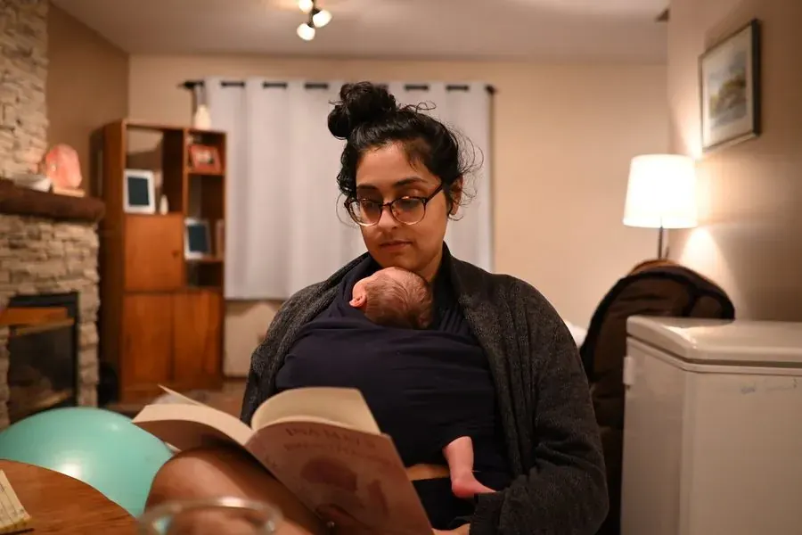

Time together
Two calls each month. One to slow down with guided reflection or meditation, and one for coaching, questions, and support.
The weekly Letters and podcast are free places to begin. Motherhood Made Yours Community is a paid space for women to go deeper together, with calls, coaching and meditation.
Maybe something in a letter stayed with you. Maybe you heard a story on the podcast and thought, I have been there too. You do not have to leave that thought where you found it.
I am building a paid community for women who want to spend more time with those questions, with me and with one another. A small commitment changes the way we show up. We can listen, try something, come back, and notice what is changing in our lives.

Some weeks you will want to talk something through. Other weeks you might simply listen, sit with a meditation, or take a question into your day. There is room for both.
Two calls each month. One to slow down with guided reflection or meditation, and one for coaching, questions, and support.
A weekly question to sit with in your own way, and a small collection of meditations to return to when you need a moment.
A place to share what you are learning and hear from women doing their own inner work, without having to perform or have it all figured out.
“I always feel validated, I feel seen, I feel truly heard.”— Abby
The Letters and podcast will stay free. I will keep sharing stories and thoughts there. If you want to go deeper and join the community, this is the next place to come.
One-on-one coaching remains its own space. In this community, we can gather, reflect, and learn from one another as we go.
I am putting the first version of this community together now. It will be a paid space, with a founding-member invitation when the doors open. The details, including the price and how to join, are still being worked out.
For now, stay close through the Letters. When the room is ready, I will share the invitation there.